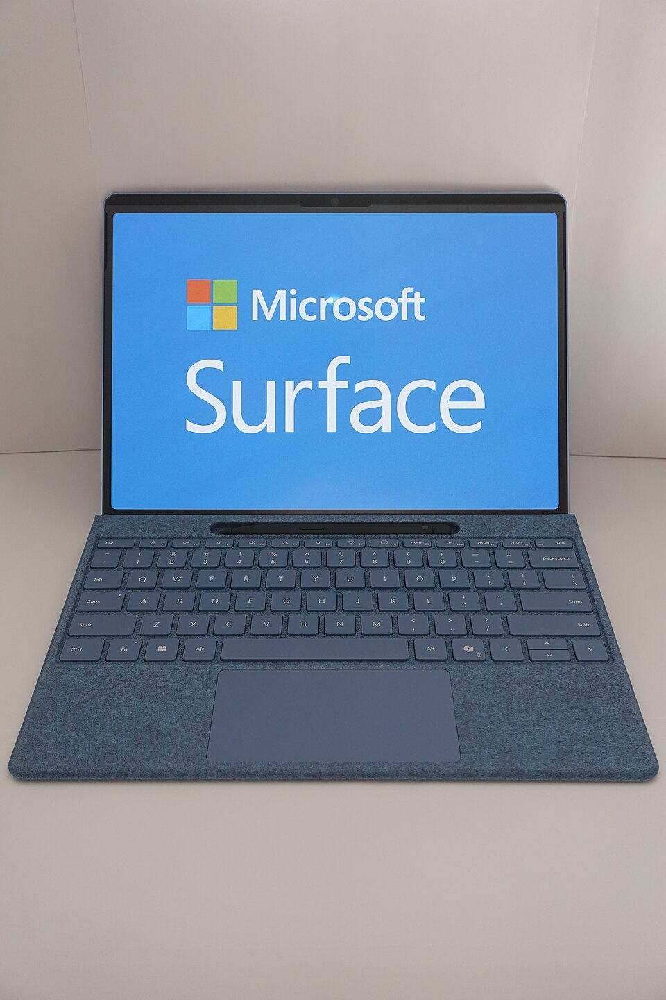
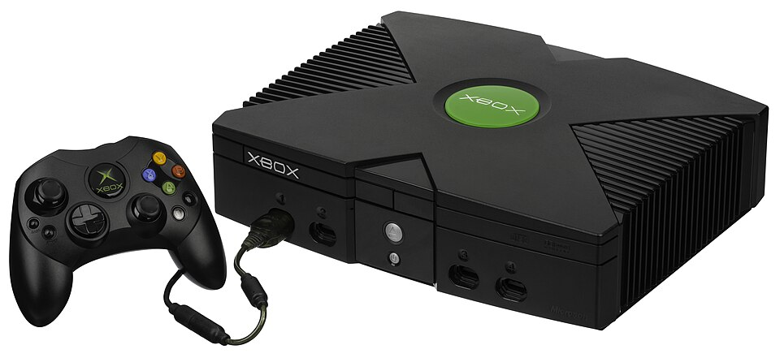

설립연도
1975년

컴퓨터 운영체제 윈도우와 업무용 프로그램 오피스(마이크로소프트 365)로 잘 알려진 회사예요. 지금은 기업들이 인터넷으로 빌려 쓰는 컴퓨터 자원인 클라우드 서비스 "애저"가 가장 빠르게 크는 사업이고, AI 서비스도 여기에 많이 얹어 팔아요. 엑스박스 게임 사업도 하고 있어요.
칸에 마우스를 올리거나 누르면 자세한 설명을 볼 수 있어요.
기업이 서버와 AI 계산 자원을 인터넷으로 빌려 쓰는 클라우드예요. 오픈AI의 모델을 기업에 제공하는 통로이기도 해서 AI 시대에 가장 빠르게 커요.
대표 예애저, 애저 AI
워드·엑셀·파워포인트가 들어 있는 마이크로소프트 365를 매달 구독료로 팔고, AI 비서 코파일럿을 더해 팔아요. 업무용 SNS 링크드인도 있어요.
대표 예마이크로소프트 365, 팀즈, 코파일럿, 링크드인

전 세계 PC 대부분에 깔린 운영체제 윈도우와 서피스 노트북·태블릿이에요. 윈도우는 PC 제조사에 사용료를 받고 팔아요.
대표 예윈도우 11, 서피스

엑스박스 게임기와 게임 구독 서비스, 2023년 인수한 액티비전 블리자드의 게임들이에요.
대표 예엑스박스, 게임 패스, 콜 오브 듀티
원화 금액은 1달러 = 1,345.4원(2026년 11월 25일 유럽중앙은행 기준환율)으로 환산한 대략적인 값이에요.
| 기간 | 매출 | 영업이익 | 순이익 |
|---|
마이크로소프트의 회계연도는 매년 6월 말에 끝나요. 예를 들어 2026 회계연도는 2025년 7월~2026년 6월이에요.
사업마다 겨루는 상대가 달라요